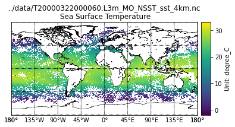
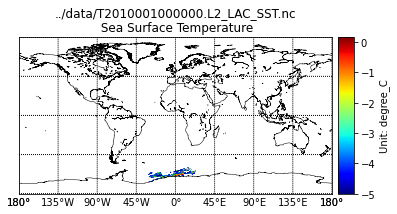

#Examples from https://www.hdfeos.org/zoo/index_openOBPG_Examples.php#MODIST#Download swath datadata_grid ="https://gamma.hdfgroup.org/ftp/pub/outgoing/NASAHDF/T2010001000000.L2_LAC_SST.nc"#Download grid data#https://gamma.hdfgroup.org/ftp/pub/outgoing/NASAHDF/T20000322000060.L3m_MO_NSST_sst_4km.ncimport urllib.requesturllib.request.urlretrieve(data_grid, "../data/demo.nc")
('../data/demo.nc', <http.client.HTTPMessage at 0x7f95c8145340>)
# Install these two extra packages into the "geopy" environment!pip install basemap!pip install netCDF4
"""This example code illustrates how to access and visualize a OBPG MODIS Terra Grid netCDF-4 file in Python.If you have any questions, suggestions, or comments on this example, please usethe HDF-EOS Forum (http://hdfeos.org/forums). If you would like to see anexample of any other NASA HDF/HDF-EOS data product that is not listed in theHDF-EOS Comprehensive Examples page (http://hdfeos.org/zoo), feel free tocontact us at eoshelp@hdfgroup.org or post it at the HDF-EOS Forum(http://hdfeos.org/forums).Usage: save this script and run $python T20000322000060.L3m_MO_NSST_sst_4km.nc.pyTested under: Python 3.7.3 :: Anaconda custom (x86_64)Last Update: 2019-12-12"""import osimport numpy as npimport matplotlib as mplimport matplotlib.pyplot as pltfrom netCDF4 import Datasetfrom mpl_toolkits.basemap import Basemap# Open netCDF-4 file.FILE_NAME ='../data/T20000322000060.L3m_MO_NSST_sst_4km.nc'nc = Dataset(FILE_NAME)# Read dataset.DATAFIELD_NAME='sst'dset = nc.variables[DATAFIELD_NAME]data = dset[:]latitude = nc.variables['lat'][:]longitude = nc.variables['lon'][:]# Dataset is too big for plotting.# Subset every n-th point to visualize data.n =2data = data[::n, ::n]latitude = latitude[::n]longitude = longitude[::n]m = Basemap(projection='cyl', resolution='l', llcrnrlat=-90, urcrnrlat =90, llcrnrlon=-180, urcrnrlon =180)m.drawcoastlines(linewidth=0.5)m.drawparallels(np.arange(-90, 91, 45))m.drawmeridians(np.arange(-180, 180, 45), labels=[True,False,False,True])m.pcolormesh(longitude, latitude, data, latlon=True)cb = m.colorbar()dset = nc.variables[DATAFIELD_NAME]units = dset.unitscb.set_label('Unit: '+units)long_name = dset.long_nameplt.title('{0}\n{1}'.format(FILE_NAME, long_name))fig = plt.gcf()# Save plot.pngfile ="{0}.py.png".format(FILE_NAME)fig.savefig(pngfile)

"""This example code illustrates how to access and visualize a OBPG TERRA MODIS Swath netCDF-4 file in Python.If you have any questions, suggestions, or comments on this example, please usethe HDF-EOS Forum (http://hdfeos.org/forums). If you would like to see anexample of any other NASA HDF/HDF-EOS data product that is not listed in theHDF-EOS Comprehensive Examples page (http://hdfeos.org/zoo), feel free tocontact us at eoshelp@hdfgroup.org or post it at the HDF-EOS Forum(http://hdfeos.org/forums).Usage: save this script and run $python T2010001000000.L2_LAC_SST.nc.pyTested under: Python 3.7.3 :: Anaconda custom (x86_64)Last Update: 2019-12-11"""import osimport numpy as npimport matplotlib as mplimport matplotlib.pyplot as pltfrom netCDF4 import Datasetfrom mpl_toolkits.basemap import Basemap# Open netCDF-4 file.FILE_NAME ='../data/T2010001000000.L2_LAC_SST.nc'nc = Dataset(FILE_NAME)# Read dataset.DATAFIELD_NAME='sst'g = nc.groups['geophysical_data']data = g.variables[DATAFIELD_NAME][:]n = nc.groups['navigation_data']latitude = n.variables['latitude'][:]longitude = n.variables['longitude'][:]m = Basemap(projection='cyl', resolution='l', llcrnrlat=-90, urcrnrlat =90, llcrnrlon=-180, urcrnrlon =180)m.drawcoastlines(linewidth=0.5)m.drawparallels(np.arange(-90, 91, 45))m.drawmeridians(np.arange(-180, 180, 45), labels=[True,False,False,True])m.scatter(longitude, latitude, c=data, s=0.05, cmap=plt.cm.jet, edgecolors=None, linewidth=0)cb = m.colorbar()dset = g.variables[DATAFIELD_NAME]units = dset.unitscb.set_label('Unit: '+units)long_name = dset.long_nameplt.title('{0}\n{1}'.format(FILE_NAME, long_name))fig = plt.gcf()# Save plot.pngfile ="{0}.py.png".format(FILE_NAME)fig.savefig(pngfile)

All materials copyright Sydney Informatics Hub, University of Sydney